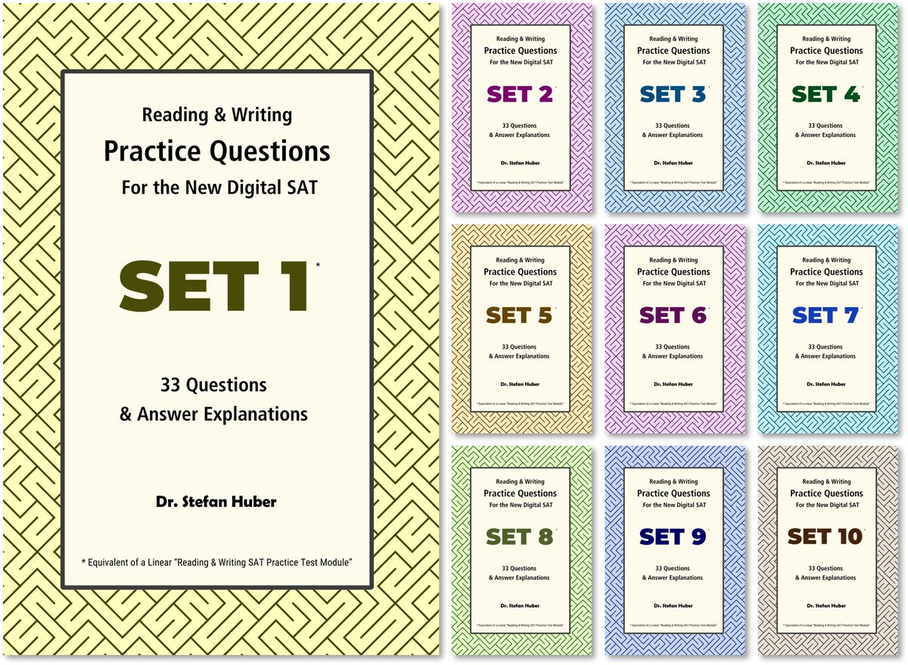

The Problem
A multiple-choice item is only useful if exactly one answer survives close scrutiny. If a careful reader can argue for a wrong answer, the item rewards debating skill instead of the skill it claims to test. If the wrong answers are obviously wrong, it tests nothing. Evaluation rubrics face the same problem: a criterion that two careful reviewers apply differently produces noise, not data.
What I Did
Between 2023 and 2024, I wrote about 750 practice items for the Reading and Writing section of the Digital SAT. I modeled their format on College Board's free official practice tests (the number, types, and difficulty of the questions), but the content is entirely my own. I published 330 of them in a ten-book series, with a written explanation for every answer choice.
I build every wrong answer around one specific, nameable error. In a grammar item, each wrong answer breaks the rule in a different way. In an item that asks the reader to meet a stated goal, each wrong answer misses a different part of that goal. My explanations name the grammatical or logical mechanism behind each answer, not just "does not fit the context."
Some question types, such as vocabulary in context, came together quickly. Others took far longer. Paired-text and inference items on topics outside my expertise were slow work. So were rhetorical synthesis items, where even the official examples did not always separate an acceptable answer from the best one, so I had to work out a consistent standard of my own.
I used AI in two ways. While writing, I used it as a sounding board on topic suitability, difficulty, and the strength of an argument or inference. After writing, I gave each item to several models as test-takers. When a model chose a different answer than my key, I treated that as a flag, not a verdict. In most cases my key held up, but the model's reasoning showed where the wording allowed a second reading, and I tightened it.
Every item went through several rounds of review. I chose the 330 published items for two qualities. The first was strength: a single, clear testing point and appropriate difficulty. The second was clarity: as little room for ambiguity as possible. A clear item can still have a wrong answer that looks right at first glance. What matters is that no one can defend it on a closer reading.
The Items
Item 1 Modifier Placement
In 1912, meteorologist Alfred Wegener proposed a groundbreaking hypothesis that challenged the geoscientific consensus of his time. Observing the jigsaw-puzzle fit of the Earth's continents, ______ the foundation for the modern understanding of plate tectonics.
Which choice completes the text so that it conforms to the conventions of Standard English?
- A Wegener articulated the theory of continental drift, laying
- B Wegener's articulation of the theory of continental drift laid
- C the theory of continental drift was articulated by Wegener, which laid
- D Wegener and his articulation of the theory of continental drift laid
Choice A is the best answer. The sentence opens with the phrase "Observing the jigsaw-puzzle fit of the Earth's continents." A phrase like this has no subject of its own, so the reader takes its subject from the main clause that follows the comma. The person who did the observing was Wegener, so "Wegener" must be that subject. Choice A puts him there. The closing phrase "laying the foundation…" then describes the result of what he did.
Show why the other choices are wrong
Choice B is incorrect because the subject of the sentence is "articulation," not Wegener. The possessive "Wegener's" only describes the articulation, so the sentence claims that an articulation observed the continents. This is the most tempting wrong answer, because Wegener's name appears right after the comma, where the reader expects the subject.
Choice C is incorrect because the passive voice makes "the theory of continental drift" the subject, so the sentence claims that a theory observed the continents. Wegener appears only in the "by" phrase, which cannot supply the subject the opening phrase needs. There is also a second error: "which" follows a person's name and has no clear antecedent.
Choice D is incorrect because the subject is compound: "Wegener and his articulation." The opening phrase has to fit every part of the subject. Wegener could observe the continents, but his articulation could not. The compound also presents a person and his idea as two separate agents that laid the foundation, which is illogical.
Item 2 Rhetorical Synthesis
While researching a topic, a student has taken the following notes:
- The Rurik dynasty was the first ruling dynasty of Kievan Rus and, later, of the Tsardom of Russia.
- According to tradition, it was founded in the 9th century by Rurik, a Varangian (Viking) prince, after whom it is named.
- The dynasty ruled for more than 700 years.
- Notable rulers from the Rurik dynasty include Saint Vladimir and Ivan the Terrible.
- The dynasty's rule ended in the early 1600s, and in 1613 the Romanov dynasty took power.
The student wants to explain the dynasty's name and describe the length of the dynasty's reign. Which choice most effectively uses relevant information from the notes to accomplish this goal?
- A The Rurik dynasty, named after its founder Rurik, a Varangian prince, ruled Kievan Rus and the Tsardom of Russia for more than 700 years.
- B The Rurik dynasty produced rulers such as Saint Vladimir and Ivan the Terrible, dominating Russian territories from the 9th to the 17th century.
- C The Rurik dynasty, which originated from a Varangian prince, lasted until the Romanovs took power in the 1600s.
- D Named after Rurik, the dynasty saw various rulers and eventually ended its reign when the Romanovs rose to power.
Choice A is the best answer. The student's goal has two parts: explain where the name comes from, and say how long the dynasty ruled. Choice A does both. "Named after its founder Rurik" explains the name, and "for more than 700 years" gives the length of the reign. Both details come directly from the notes.
Show why the other choices are wrong
Choice B is incorrect because it does only half the task. The span "from the 9th to the 17th century" conveys how long the dynasty ruled, but the sentence never explains the name. It uses the note about notable rulers instead, which the goal does not call for.
Choice C is incorrect because it comes close to both parts of the goal but completes neither. It mentions "a Varangian prince" without naming him, so the reader cannot connect the founder to the dynasty's name. It also gives an end point ("until the Romanovs took power") but no starting point, so the reader cannot tell how long the dynasty ruled.
Choice D is incorrect because it does only the other half of the task. "Named after Rurik" explains the name, but the sentence gives no time frame. It says the dynasty "eventually ended its reign" without saying when it began or how long it lasted.
| Choice | Explains the name | Gives the length of reign |
|---|---|---|
| A | Yes | Yes |
| B | No | Yes |
| C | No | No |
| D | Yes | No |
The Result
The series contains 330 items and 1,320 answer explanations. The grid under the Rurik item performs the same check an evaluation rubric does: does a response meet each part of the request? The rubric case study applies this method to chatbot responses.

- Skills shown
- Assessment design, distractor analysis, rationale writing, quality auditing, rubric design.
I am not affiliated with, endorsed by, or sponsored by College Board, which owns the SAT. I produced these books independently.